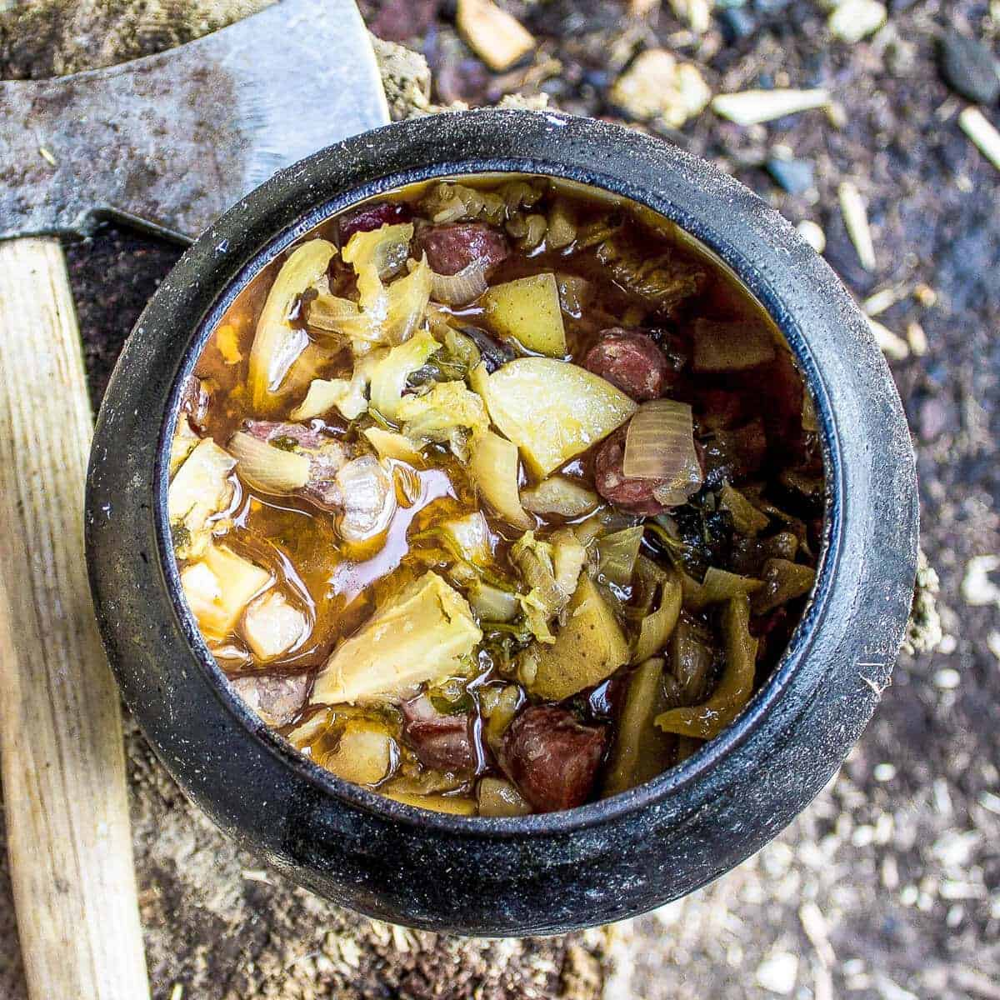

Hearty Viking Stew

Description
A staple in the viking diet, this rich and flavorful stew is made with slow-coocked meats, root vegetables, and a mix of earthy spices.
This recipe is perfectfor a cold winter night or a filling meal after a long day of adventure
Ingredients
- 1lb beef or venison, cubed
- 2 onions, chopped
- 3 carrots, chopped
- 2 parsnops, chopped
- 2 turnips, chopped
- 4 cups beef broth
- 2 tbsp butter
- 1 tsp salt
- 1 tsp ground black pepper
- 1 tsp dried thyme
- 1 tsp dried sage
- 1 tsp dried rosemary
Instructions
- In a large por, melt the butter over medium heat. Add the onions and cook until softened.
- Add the meat and cook until browned on all sides.
- Stir in the carrots, parsnips, turnips, salt, pepper, thyme, sage, and rose
- Pour ind the beef broth, bring to a boil, then reduce the heat and let it simme for 1-2 hours, or until the meat is tender and the vegetables are cooked through
- Serve hot with a side of Viking flatbread or rustic rye bread.
Home